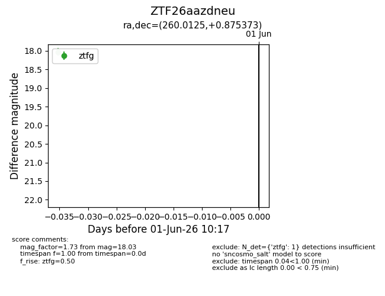
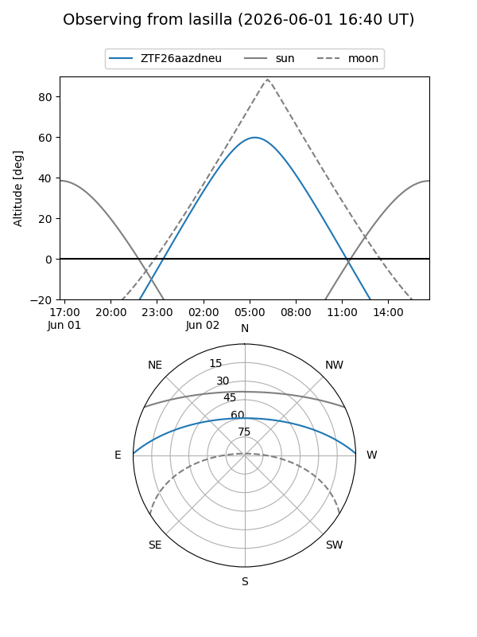
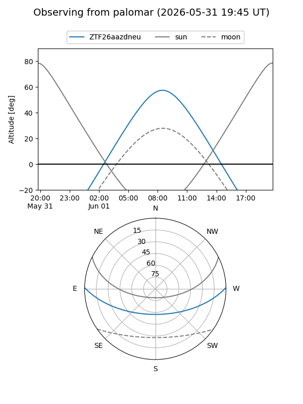

ZTF26aazdneu
Target ZTF26aazdneu at 2026-06-01 10:18
Aliases and brokers:
lsst-FINK: link
lsst-Lasair: link
lsst-ALeRCE: link
ztf-FINK: link
ztf-Lasair: link
ztf-ALeRCE: link
alt names
ZTF26aazdneu (ztf,fink_ztf)
Coordinates:
equatorial (ra, dec) = 260.0125,+0.87537
equatorial (HMS+DMS) = 17:20:03.01,+00:52:31.34
galactic (l, b) = (22.8744,+20.63923)
Flags:
Photometry:
last ztfg=18.03
1 ztfg detections
Lightcurve

Visibility


Additional plots